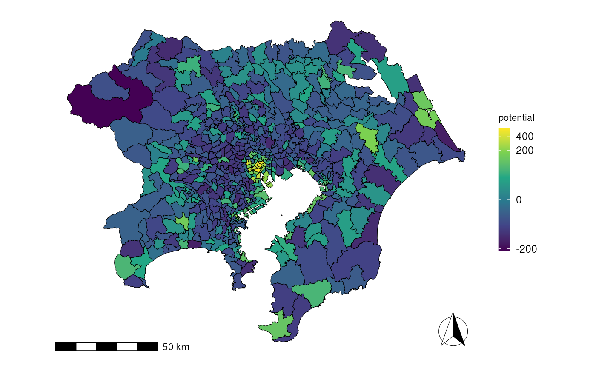
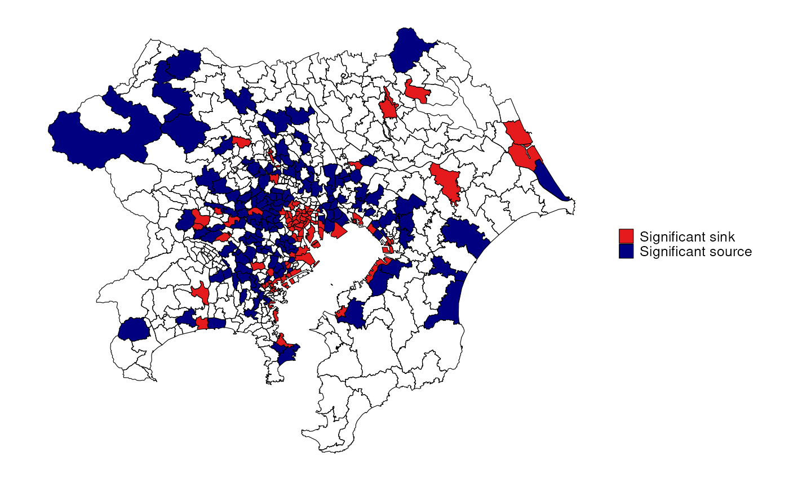

Potential of Human flow (general graph case)
PotentialInTokyo.RmdTutorial: Potential of Human flow (general graph case)
This tutorial demonstrates how to detect significant sinks and sources of human flow according to the scalar potential in the case of the Tokyo metropolitan area.
Dataset: origin-destination matrix in Tokyo with trip distance
We used a dataset from the person-trip surveys conducted in 2018 in the Tokyo metropolitan area, which is publicly available from the Tokyo Metropolitan Region Transportation Planning Commission.
suppressPackageStartupMessages(library(tidyverse))
od = read_csv("tokyo2018.csv",
col_types=list(trips = "n", road_distance_in_km="n",.default="c"))
od
#> # A tibble: 377,610 × 4
#> origin dest trips road_distance_in_km
#> <chr> <chr> <dbl> <dbl>
#> 1 0011 0010 990 3.24
#> 2 0012 0010 2445 2.00
#> 3 0020 0010 2793 2.81
#> 4 0021 0010 0 2.07
#> 5 0022 0010 0 2.26
#> 6 0023 0010 1692 3.30
#> 7 0024 0010 1318 4.25
#> 8 0030 0010 2525 4.65
#> 9 0031 0010 893 3.64
#> 10 0032 0010 1426 8.81
#> # ℹ 377,600 more rowsThe first two columns indicate the origin and destination zones, representing the geographical zone code defined by the Tokyo Metropolitan Region Transportation Planning Commission. The trips column shows the number of trips. We added the road_distance_in_km column showing the trip distance from the origin to the destination. This distance is evaluated by the road distance between the centroids of the origin and destination zones, calculated by the Open Source Routing Machine (OSRM) based on Open Street Map. The dataset contains 615 unique zones and 615 \(\times\) 614 rows (excluding the trips within each zone).
Preprocess: convert the given dataset to net-flow \(Y\) on a graph \(G(V,E)\)
As described in the main text, we denoted the net movements of people as \(Y\) on a graph $G(V,E). In the current context, the vertices \(V\) correspond to the locations and the edges \(E\) are the connections between them.
Distances \(d_{ij}\) between locations \(i\) and \(j\) crucially affect their connections. Trips will be rare for long distances even if the potentials at the endpoints differ. On the other hand, no trips are often observed for short distances. This implies that zero movements happen in two distinct situations. To distinguish the nonexistence of movements based on distance and other factors, we assumed that a pair of locations is connected if its road distance \(d_{ij}\) is within a threshold \(\theta\).
We calculate the threshold distance \(\theta\) above which trips are rarely observed. We show the cumulative distribution of trip distance \(P(X<d)\) as a function of trip distance \(d\). The threshold \(\theta\) is determined based on criterion \(P(X<\theta) = 0.99\).
df = od %>% arrange(road_distance_in_km) %>% mutate(cum_trips = cumsum(trips))
df = df %>% mutate( cum_dist = cum_trips / sum(df$trips))
df
#> # A tibble: 377,610 × 6
#> origin dest trips road_distance_in_km cum_trips cum_dist
#> <chr> <chr> <dbl> <dbl> <dbl> <dbl>
#> 1 1021 1020 208 1.00 208 0.0000133
#> 2 1020 1021 1643 1.00 1851 0.000118
#> 3 1022 1021 640 1.04 2491 0.000159
#> 4 1021 1022 904 1.04 3395 0.000216
#> 5 3017 3013 1383 1.17 4778 0.000305
#> 6 3013 3017 829 1.17 5607 0.000358
#> 7 6023 6021 1820 1.17 7427 0.000474
#> 8 6021 6023 1035 1.17 8462 0.000540
#> 9 6061 6060 2601 1.18 11063 0.000705
#> 10 6060 6061 216 1.18 11279 0.000719
#> # ℹ 377,600 more rows
# find intersection with threshold
y0 = 0.99
RootLinearInterpolant <- function (x, y, y0 = 0) {
if (is.unsorted(x)) {
ind <- order(x)
x <- x[ind]; y <- y[ind]
}
z <- y - y0
k <- which(z[-1] * z[-length(z)] < 0)
xk <- x[k] - z[k] * (x[k + 1] - x[k]) / (z[k + 1] - z[k])
return(xk)
}
thres = RootLinearInterpolant(df$road_distance_in_km, df$cum_dist, y0)
library(ggplot2)
theme_set(theme_minimal())
ggplot(df, aes(x = road_distance_in_km, y=cum_dist) ) +
geom_line(linewidth=1.3) +
xlab("Distance [km]") +
ylab("Cumulative distribution, Prob. (X < d)") +
geom_hline(yintercept= y0, color="red", linetype="dashed") +
annotate("segment", x=thres,xend=thres, y=y0 - 0.1, yend=y0,
arrow=arrow(length = unit(2, "mm")) ) +
annotate("text", x = thres, y = y0 - 0.15,
label=sprintf("%.1fkm", thres),size=3)
Next, we make net flows between all pairs of locations and select them by \(d_{ij} < \theta\).
od_forward = od
od_backward = od_forward %>% select(origin,dest,trips) %>%
rename(origin_new = dest, dest_new = origin) %>%
rename(origin = origin_new, dest = dest_new, back_trips = trips ) %>%
select(origin, dest, back_trips)
netflow = od_forward %>% left_join(od_backward,by = join_by(origin, dest)) %>%
filter(origin > dest) %>% mutate(netflow = trips - back_trips) %>%
rename(vertex1 = origin, vertex2=dest)
netflow_selected = netflow %>%
filter(road_distance_in_km < thres) %>%
select(vertex1,vertex2,netflow)
netflow_selected
#> # A tibble: 117,329 × 3
#> vertex1 vertex2 netflow
#> <chr> <chr> <dbl>
#> 1 0011 0010 990
#> 2 0012 0010 2323
#> 3 0020 0010 2793
#> 4 0021 0010 0
#> 5 0022 0010 0
#> 6 0023 0010 1692
#> 7 0024 0010 1318
#> 8 0030 0010 2525
#> 9 0031 0010 893
#> 10 0032 0010 1426
#> # ℹ 117,319 more rowsCalculate the potential \(s\) for the net flow \(Y\)
The potential in Equation (1) in the main text is calculated by using function scalar_potential_on_graph in the HodgePotentialHumanFlow package.
library(HodgePotentialHumanFlow)
s = HodgePotentialHumanFlow::scalar_potential_on_graph(netflow_selected)
#> Calculating p-values by monte calro (100000 steps).
head(s)
#> zone potential pvalue_above
#> 1 0011 406.7119 0
#> 2 0012 494.1058 0
#> 3 0020 261.1093 0
#> 4 0021 222.9379 0
#> 5 0022 191.7659 0
#> 6 0023 227.1667 0The function returns a dataframe with three columns: zone, potential, and \(p\)-value. The \(p\)-value indicates \(P(\hat{s}_i > s_i)\) under the null hypothesis (see the main text for details). The sample number for calculating this pseudo \(p\)-value can be specified by option num_samples (default = 1e5).
s = HodgePotentialHumanFlow::scalar_potential_on_graph(netflow_selected, num_samples = 1e5)
#> Calculating p-values by monte calro (100000 steps).We plot the potential on a map using a shapefile publicly available from the Tokyo Metropolitan Region Transportation Planning Commission.
library(sf)
#> Linking to GEOS 3.11.1, GDAL 3.6.3, PROJ 9.2.0; sf_use_s2() is TRUE
map = st_read("tokyo2018.gpkg", quiet=T)
map = map %>% left_join(s)
#> Joining with `by = join_by(zone)`
library(ggplot2)
library(viridis,quietly = T)
suppressPackageStartupMessages(library(urbnthemes,quietly=T))
library(ggspatial,quietly=T)
suppressPackageStartupMessages(library(scales,quiet = T))
ggplot(data=map, aes(fill=potential)) +
geom_sf(color="black", lwd=0.2) +
scale_fill_viridis_c(option="viridis", trans=modulus_trans(0.3)) +
theme_urbn_map(base_family="Helvetica") +
theme(legend.key.height=unit(1.5,"line")) +
annotation_scale(location = "bl") +
annotation_north_arrow(location = "br", which_north = "grid",
style = north_arrow_fancy_orienteering(text_size =0, line_width=0.5)) 
Detect significant sinks and sources
To detect significant sinks for zones with a positive potential, a multiple-comparison test is performed using the \(p\)-value under the control of the false discovery rate (FDR), \(\alpha (=0.05)\), with a standard Benjamini-Hochberg procedure. Similarly, for zones with a negative potential, a multiple-comparison test is performed using the \(p\)-value of \(1 - P(\hat{s}_i > s_i)\) under FDR control.
df_sink= s %>% filter(potential >= 0)
df_sink$pvalue_adj = p.adjust(df_sink$pvalue_above, method="fdr")
df_source= s %>% filter(potential < 0)
df_source$pvalue_adj = p.adjust(1 - df_source$pvalue_above, method="fdr")
df = rbind(df_sink, df_source)
library(sf)
alpha = 0.05
map = st_read("tokyo2018.gpkg", quiet=T)
map = map %>% left_join(df) %>% rowwise() %>%
mutate(type = case_when(
potential >= 0 & pvalue_adj < alpha ~ "Significant sink",
potential < 0 & pvalue_adj < alpha ~ "Significant source",
))
#> Joining with `by = join_by(zone)`
ggplot(data=map, aes(fill=type)) +
geom_sf(color="black", lwd=0.2) +
theme_urbn_map(base_family="Helvetica") +
scale_fill_manual(values = c("#e41a1c","navyblue"),na.translate = F) +
theme(legend.title=element_blank())